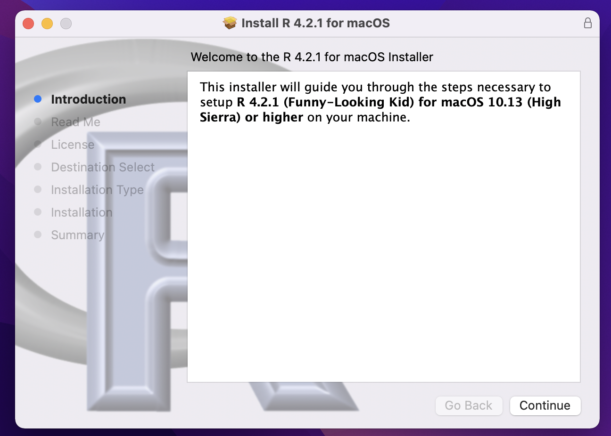
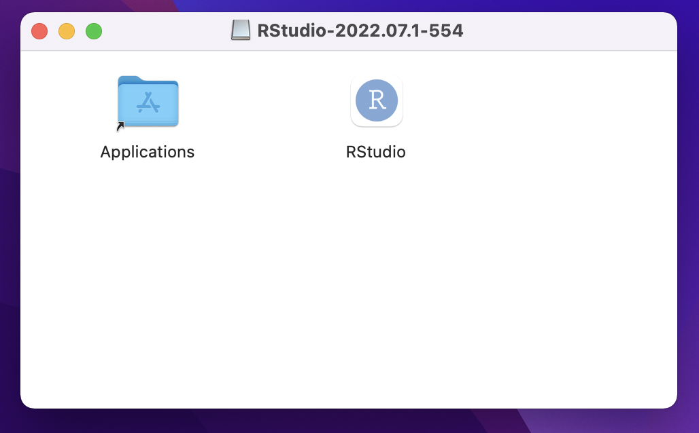

Installation Day
Housekeeping
Agenda
Reproducible data analysis
Toolkit
Rand RStudio (Posit)RMarkdownGit, GitHub, and GitHub Desktop
Installation
Practice!
Reproducibility
Allows your code execution or an experiment to be repeated by another person
Goals:
Are the tables and figures generated directly from the code?
Does the code actually do what you think it does?
Can your code be used for other data/analyses?
Toolkit
We will use the programming language
Rto write codeHow will interact with the
Rcode? In the integrated development environment called RStudio. Helps us be more productive withRRis like a car engine, and RStudio is like a car’s dashboard
We will liberate our programming by keeping code, narrative, and output all in the same interface using R Markdown documents
We will want to keep track of the modifications we make to these R Markdowns by using the version control system Git and GitHub
R Markdown
Allows us to create fully reproducible reports
Can code in code chunks and type regular text/narrative outside of these chunks
How will we use R Markdown?
You coding practice problems and some weekly lab assignments will be assigned as an R Markdown document (.Rmd)
You will almost always be provided with a template .Rmd to start with (the exception being the end of the semester when you’ve mastered this material!)
Version control

Git and GitHub
Git is a version control system (like “Track Changes” in Microsoft Word)
GitHub is the home for your Git-based projects (like DropBox)
We will work with GitHub Desktop to make working on code on your personal machine and sending it to the cloud for “safe keeping” seamless
- Also makes for great collaboration, because multiple people can be on the same GitHub project and will see all the change you make (kind of like a shared GoogleDoc)
Installation
Installing R
Please be patient! This process may be time-consuming and stressful, but it is necessary for the rest of the course!
- Go to the CRAN website and click on the appropriate link under “Download and Install R”. Then:
- If you are Windows: click on the blue text that says “install R for the first time”.
- If you are macOS: check your Mac OS system and if you have a chip (Apple icon -> About this Mac -> Overview)
Then on the website, click the newest release that supports your current OS version. This will most likely be R-4.4.1-arm64.pkg or R-4.4.1-x86_64.pkg.

Install R (cont.)
A file will download, most likely to your Downloads folder. Run the file by clicking on it. Allow the app to make changes to your device if prompted.

Follow the installation instructions, until you click on “Finish” to exit the installation setup. At this point,
Rshould be successfully installed!
Installing RStudio
Go to the Posit website and scroll down a little until you see two steps. We already did Step 1!
Under Step 2, click the blue Download RStudio Desktop button recommended for your computer
- macOS users: double check you have an OS that is recent enough! Otherwise, raise your hand!
Run the downloaded RStudio Executable file until you hit the “Finish” button. It may be the case that you don’t have to click anything at all.
After RStudio finishes downloading, a window like this might pop up. If so, go ahead and drag the RStudio icon into the Applications folder.

Opening RStudio
In the previous step, we put an RStudio shortcut into your Applications folder.
You may find it easier to put a shortcut somewhere else for easier access (e.g. your dock or home screen)
To open RStudio, simply double click on the RStudio icon (you do not need to click an the
Ricon)
Make a folder
- Make a folder that is easy to access (e.g. on your Desktop). Call it STAT 201. All of your files for this course should go into this folder.